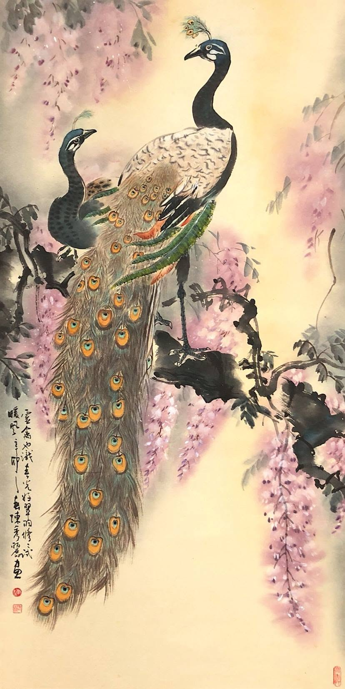

THE ARTIST
陳秀麗女士
清朝秀才王作霖之外孫女，師承嶺南派大師畫家黃磊生。
本集收錄花鳥、山水與走獸題材，從繁花翠羽到溪山飛瀑，在濃淡相生的墨色與明麗設色之間，欣賞自然的姿態與生活的情意。
THE COLLECTION
彩墨中的四時風景
點選作品放大欣賞。作品名稱含編輯擬題；理念詮釋依畫面撰寫，非畫家本人自述。照片已個別設定顯示亮度，可於放大畫面切換原照。
沒有符合的作品，請試試其他關鍵字。

THE ARTIST
清朝秀才王作霖之外孫女，師承嶺南派大師畫家黃磊生。
本集收錄花鳥、山水與走獸題材，從繁花翠羽到溪山飛瀑，在濃淡相生的墨色與明麗設色之間，欣賞自然的姿態與生活的情意。
THE COLLECTION
點選作品放大欣賞。作品名稱含編輯擬題；理念詮釋依畫面撰寫，非畫家本人自述。照片已個別設定顯示亮度，可於放大畫面切換原照。
沒有符合的作品，請試試其他關鍵字。